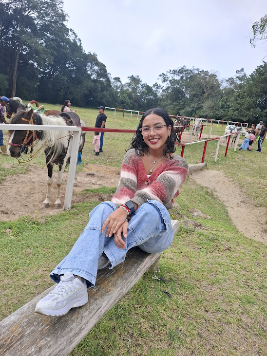

|
 |
Dayannis colmenaresSoy estudiante de Computación en la Universidad Central de Venezuela (UCV), actualmente cursando el sexto semestre de la carrera. En está ocasión se me presentó la oportunidad de ser preparadora de la materia Base de Datos, cuya área es una de mis favoritas por los momentos. Soy muy responsable y dedicada en todo lo que hago y estoy en el proceso de descubir qué me apasiona.
Si necesitan comunicarse conmigo me pueden escribir a:
|